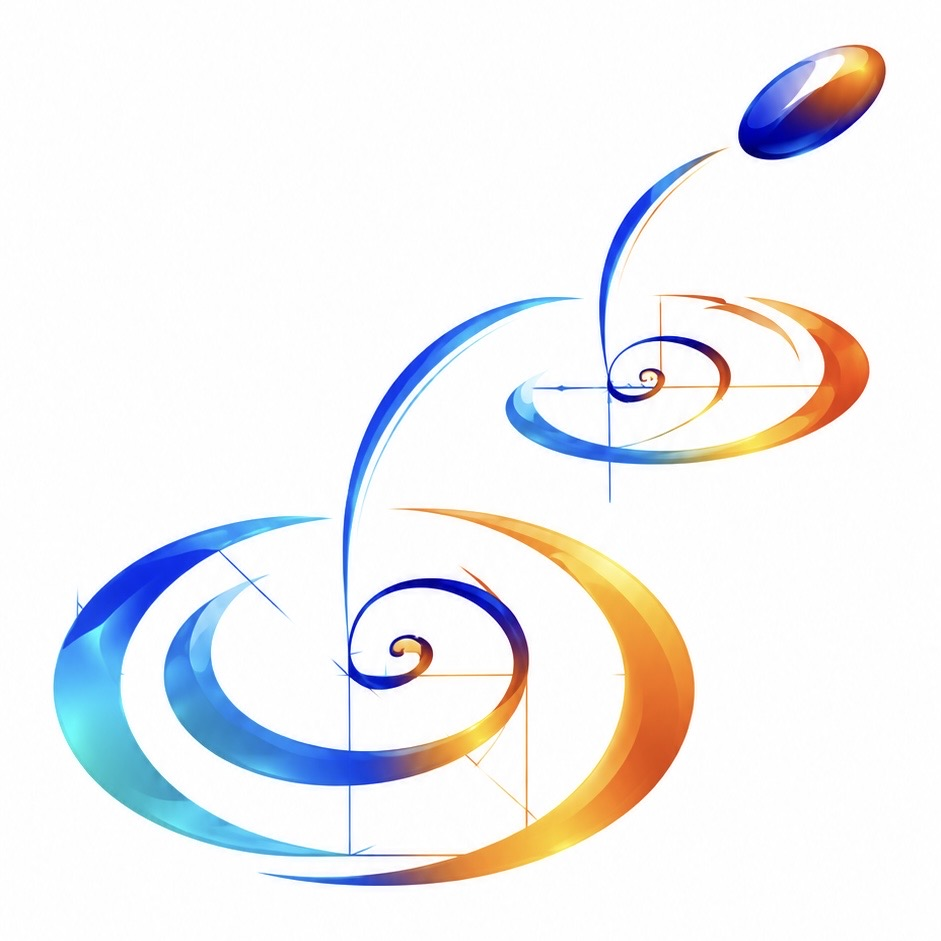

NeurIPS 2026

DAPS: Dependency-Aware Premise Selectionfor LLM Theorem Proving
1 ETH Zurich 2 ETH AI Center
Abstract
LLM-based theorem proving in Lean 4 has advanced rapidly, but provers are difficult to leverage newly contributed lemmas, because retrieval skews toward popular foundational lemmas, leaving the right premises buried among hundreds of thousands of candidates. Existing neural selectors rank candidates by semantic similarity, with three intrinsic limitations: frequency-skewed retrieval, isolated pairwise ranking, and degradation on out-of-distribution queries such as competition problems and informal language. Given that mathematics is structured by dependencies rather than similarities, we restore this signal to both the training data and the model. We curate two underused dependency resources. We conduct the first systematic mining of 53 Lean Blueprint projects, a previously untapped corpus of 3,805 manually curated informal+formal nodes that capture rare, research-level premises absent from Mathlib4. We further pair it with the extraction of comprehensive, typed, multi-level Mathlib4 dependencies. We then introduce DAPS, a dependency-aware premise selector with a structural neighborhood encoder, a group-level contrastive objective, and a Mathlib-then-Blueprint adaptation procedure. DAPS reaches mean Recall@32 of 89.25 on Mathlib4-Heldout (+11.41 over the strong selector LeanHammer) across three runs, maintains this lead on two out-of-distribution benchmarks, improves four general-purpose LLMs on the informal IMO-ProofBench, and raises Goedel-Prover-V2-8B Pass@4 on miniF2F-test from 49.90 to 54.03 when its selected premises are supplied.
BibTeX